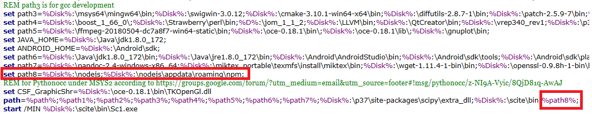
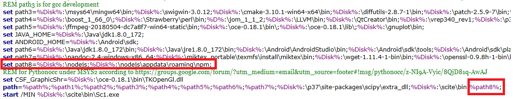
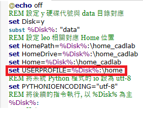
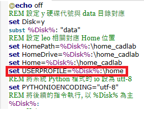
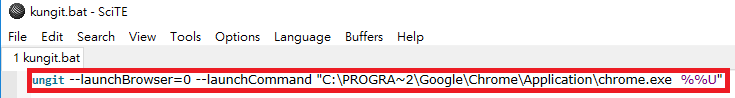
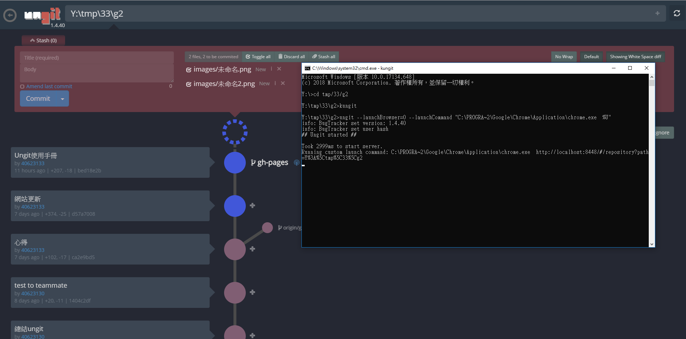

協同實習任務1-3
編寫ungit使用手冊
1.下載 ungit 與 node.js 程式碼
首先下載 kmol_2019.7z, 接著再下載 nodejs_with_ungit.7z, 兩者分別解開壓縮檔案, 然後將 nodejs 放入 kmol_2019 的 data 目錄中.
2.設定命令列搜尋路徑
接下來設定啟動 start.bat 中的 ungit 命列列搜尋路徑:
新增set path8=%Disk%:\nodejs;%Disk%:\nodejs\appdata\roaming\npm;(抓取nodejs主程式路徑)
path=%path%;%path1%;%path2%;%path3%;%path4%;%path5%;%path6%;%path7%;%Disk%:\p37\site-packages\scipy\extra_dll;%Disk%:\scite\bin;%path8%;
 

3.設定 USERPROFILE 環境變數
讓 node.js 能夠使用 y:\home 作為使用者目錄, 在 start.bat 中加入
set USERPROFILE=%Disk%:\home
 

4.以 SciTE 編輯器存入 Y:\kungit.bat 批次檔案中
為了對應 "C:\Program Files (x86)", 針對目前所在的倉儲目錄, 以 Google Chrome 瀏覽器開啟 ungit 的網際倉儲連結.
新增批次檔
ungit --launchBrowser=0 --launchCommand "C:\PROGRA~2\Google\Chrome\Application\chrome.exe %%U"
(指令內的PROGRA~2為Program file(x86)之縮寫，此外PROGRA~1為Program Flies縮寫)
為了跟ungit做一個區別批次檔名稱改成kungit並存在y:/底下

5.開啟start.bat，輸入kungit後，會在瀏覽器中開啟ungit頁面

完成ungit
建立可攜程式系統 << Previous Next >> 手足球場地